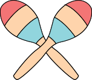
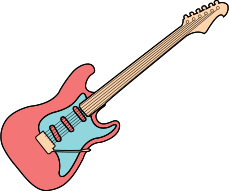
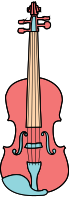
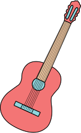
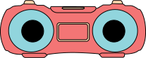
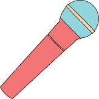
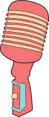
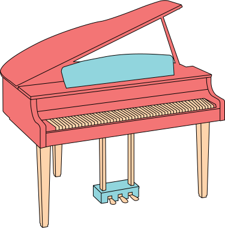
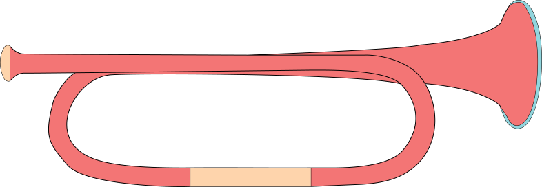
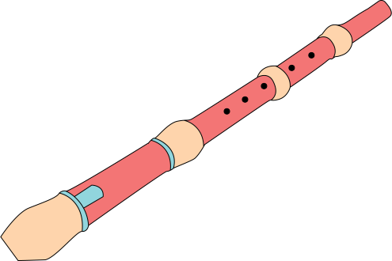

"Music Mixer Pack"
icon set

Maracas
Traditional Mexican musical instrument.
Usually filled with dried beans. Played
in pairs by being shaken.
Usually filled with dried beans. Played
in pairs by being shaken.

Electric guitar
Variation of aguitar, that uses
pickups to convert the vibration into
electrical signals.
pickups to convert the vibration into
electrical signals.

Violin
Wooden musical instrument.
Invented in italy in 16th century.
Frequently used in classical music.
Invented in italy in 16th century.
Frequently used in classical music.

Guitar
Wooden musical instrument
Traditionally, has 6 strings.
Can be played with both hands.
Traditionally, has 6 strings.
Can be played with both hands.

Boombox
Portable music player.
Design to play casette tapes/records
Sometimes has AM/FM radio player.
Design to play casette tapes/records
Sometimes has AM/FM radio player.

Dynamic microphone
Tool, that is used to increase
the volume of singer's voice during performance.
the volume of singer's voice during performance.

Studio microphone
Piece of equipment.
Used in music studios to record
clean sound.
Used in music studios to record
clean sound.

Piano
Acoustic, stringed instrument.
Used by real estate agents to sell
overpriced property.
Used by real estate agents to sell
overpriced property.

Trumpet
Brazen musical instrument.
Frequently used in classical
and jazz music.
Frequently used in classical
and jazz music.

Flute
Wooden musical instrument.
Used by former circus performers,
who lost everything but a snake.
Used by former circus performers,
who lost everything but a snake.